Update Requirements
Variants
[RQOP-R580-UpdateRq]: the "Update requirements from diagnostic objects" operation shall apply to diagnostic objects in the selected library or variant [RQ-R093].
Create Requirements
[RQ-R580.3 Create Requirements]:
[RQ-R580-NewRequirement]:
- if a diagnostic object is not associated with a requirement,
- then the "Update" operation always creates a new requirement (it does not reuse existing requirements).
- Cf. [RQ-R586] for diagnostic objects that are associated with a requirement.
[RQ-R580-a] for diagnostic instances, data objects and DTCs,
- if the parent object is linked to a requirement,
- and they are assignable (see [RQ-R107]),
- and the tree structure allows (see [RQ-R015]),
- then create a requirement of the corresponding type under the requirement linked to the parent object.
[RQ-R580-DID] For a DID not used by a diagnostic instance, ...
- generate a Data DiagInstance Requirement,
- [RQ-R580-DIDDiagClass] set the “DiagClass” property [RQ-R030-DiagClass] to the special reserved qualifier described in [RQ-R030-DID].
- [RQ-R580-DIDIdentifier]
[RQ-R580-a2] If the diagnostic instance uses a DID via a DID Data Reference [DID-D001-d], then handle the DID Data as if they were contained in the diagnostic instance (i.e. create data requirements from the data objects in the DID) (DID handling from CDC-39298 8.5)
[RQ-R580-b] Fill optional type specific properties [RQ-R030] (for some special properties, see the following).
[RQ-R580-AttributeToUserDefined] Fill user-defined properties [RQ-R040] from an attribute of the CANdela object,
- if the property is associated as described in [RQ-R100-Prop] (reverse of [RQ-R560-Attribute]);
- using the rules defined in [CONV-R010],
- handling an int requirement as "unsigned",
- for "default" leave the property empty.
- Note: only fill an existing property, do not create one.
[RQ-R580-DTC] For DTC requirements, fill a user-defined property that exists “for requirements type” DTC [RQ-R040-ForType]...
- [RQ-R580-ColumnToUserDefined] ... from an additional column of the CANdela DTC,
- if the column is associated as described in [RQ-R100-DTCProp] (reverse of [RQ-R560-DTCUserDefined]),
- [RQ-R580-ColumnName] ... using the language-dependent name (not the qualifier) of the DTC column.
Examples:
- a string DTC attribute with value "0x0a" will become an int requirement value "10".
- a string DTC attribute with value "0x0aG" will become an int requirement value "" (empty).
[RQ-R580-c] For diagnostic instance requirements,
- [RQ-R580-cDiagClass] set the “DiagClass” property to the qualifier of the diagnostic class template (even for a singleton diagnostic instance).
- [RQ-R580-cIdentifier]
[RQ-R580-DTCDiagClass] For a DTC requirement, ...
- if the “DiagClass” property [RQ-R030-DiagClassDTC] is empty, do not modify it. Motivation: when all requirements are created anew, the DTC Requirement will be contained in a DiagInst Requirement, so the DiagClass is not necessary.
- if the “DiagClass” property is not empty, set it to the qualifier of the diagnostic class template.
[RQ-R580-Data] For a data requirement:
- update of requirements updates the non-empty properties (CDS-69873 v10) so that the result does not have a conflict
- For atom with fixed length: updates bit length, otherwise removes the value.
- For physical value type atom with hex/dec/oct/bin, updates display format, otherwise removes the value.
- for a data object which references a packet data type,
if the packet data type has a fixed length [DTL-D100],
CANdelaStudio shall generate a DataRequirement with bitLength = the fixed length of the packet data type.
[RQ-R580-ServicesAtData] For data requirements,
if the diagnostic instance contains multiple telegram tables with semantics "data" [CPC-R100],
CANdelaStudio shall set the “services” property [RQ-R030-ServicesAtData] to all service primitives in which the data object occurs (CDC-41382 9.0).
R581.1: for a Vehicle System Group, if there is no linked VehicleSystemGroup Requirement, create a new one, at the following location:
a) if there is already a at least one VehicleSystemGroup Requirement in the document: under the parent of the first of them;
b) otherwise, if there is a top-level Heading named “Vehicle System Groups”, “Fahrzeugsystemgruppen” or as the name of the Vehicle System Group node in the CANdelaStudio tree (= maybe localized): in that Heading
c) otherwise, create a top-level Heading with the name of the Vehicle System Group node in the CANdelaStudio tree: in that Heading.
R582.2: for diagnostic instances, data objects and DTCs, if the parent object is not linked to a requirement, create a requirement for the diagnostic object in a subtree of headings (a top-level heading for diagnostic classes and singleton diagnostic instances, contained heading for non-singleton diagnostic instances). For the requirement name, use the name of the diagnostic object.
Possible future extension: for a Heading created for a diagnostic class, link the Heading and the diagnostic class. Note: after generation, the names are equal, so the way back is unambiguous anyway. Only if the user modifies the name of the requirement, an explicit link would help.
R583.0: provide execution for 1..n selected (“locally”) or for all diagnostic objects.
If executed locally: recursively process all diagnostic objects contained in the selected ones (even those that are not selected); generate requirements within the requirement selected in the requirements tree (within top-level for “(all)”), or inform user if this is not possible (e.g. for data object and fault memory diagnostic instance requirement selected).
R584.0: for all created requirements (even headings), enter the requirement ID in the diagnostic object property of [RQ-R100].
R585.0: the order of created requirements shall reflect the order of the diagnostic objects as far as possible.
Move Requirements
R5852.0 (new in 8.0 SP2): during update, after creating all links,
if a diagnostic object DO is linked to a requirement R,
and the parent of DO is linked to a requirement X that is not the parent of R,
then move R to be contained in X (at the end of the child list).
Update Existing Requirements
[RQ-R586.1 Update Existing Requirements]: If for any diagnostic object an associated requirement exists, and they are compatible (see R105), update the properties of the requirement properties from the diagnostic object:
Note: do not update properties if diagnostic object and requirement are not compatible, e.g. do not modify the name of a heading or of a text requirement.
[RQ-R587.0]: provide execution for 1..n selected (“locally”) or for all diagnostic objects.
If executed locally: also process all diagnostic objects contained in the selected ones (= recursive); update any associated requirements without regard of the requirement selection in the requirements tree.
[RQ-R588.0]: when updating requirements, fill all requirement properties, even those that were empty (e.g. BitLen, DisplayFormat, DTC code…; as opposed to [RQ-R560-DataObject]).
Insert Requirement
Example: “Data Requirement” is selected (“S”), the previous requirement “P” in the list is “DataDiagInstanceRequirement”.
Basic Rules for Insertion of a new Requirement
Rule 1. The new requirement must not violate the fundamental “contains” relationship for requirements (see spec “CANdela Data Model”).
Rule 2. CANdelaStudio uses “insert before”, not “insert after” (the new requirement is inserted at the position of S and pushes S down one line).
Rule 3. The new requirement shall be inserted at a typical level for the type of requirement, so that the user only seldom needs to move the new requirement to another level. (= CDS-26629)
Rule 4. The new requirement shall not become the parent of the selected requirement, which would be irritating to the user.
Rule 5.
 |
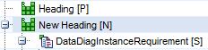 |
Headings are optimally inserted as siblings of the most recent ancestor heading. Motivation: if Headings are nested, one parent Heading typically has n child Headings. Therefore, both extremes a) insertion as sibling of top-most Heading as well as b) insertion as child of bottom-most Heading would be undesired in most cases.
Insertion Algorithm
For a new requirement N...:
1. if no requirement exists, or
2. if the first requirement is selected |
insert N as first requirement on top level. |
|
Let P := the previous requirement one line above S (if a requirement S is selected),
otherwise let P := the last requirement. |
| 3. To insert a Heading N, … |
|
| 3.1 if a requirement S is selected whose parent is a Heading |
insert N as a child of that Heading (= as previous sibling of S) |
| 3.2 otherwise |
insert N as a sibling of A := {P or the nearest ancestor of P} which
a) is a Heading, and
b) is not the parent of S (also e.g. if no requirement selected) |
| 4. otherwise (= N is not a Heading) |
insert N as a child of A := {P or the nearest ancestor of P}, for that:
a) N can be a child of A, and
b) {no requirement S is selected, or A is at most the parent of S} |
Examples:
| 1. |
Insert TextRq |
|
| 2. |
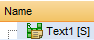
Insert TextRq |
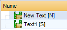
|
| 3.1 |
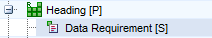
Insert Heading |
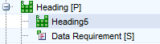
|
| 3.2 |
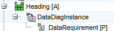
No selection S, insert Heading |
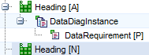
|
| 3.3 |
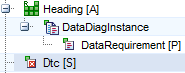
With selection S, parent of S is not a Heading, insert Heading |
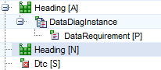
Heading [A] is not parent of S |
| 4. |
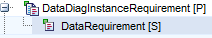
Insert DataRq: A = P = parent of S |
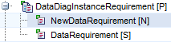
|
| 5. |
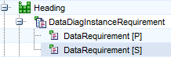
Insert DtcRq |
There is no matching A.
DtcRq can be child of Heading,
but the Heading is more than parent of S. |
| 6. |
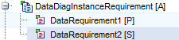
Insert DataRq: A = parent of P and S |
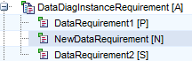
|
| 7. |
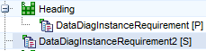
Insert DataRq: A = P |
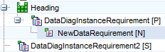
|
| 8. |
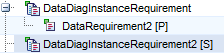
Insert DataRq: A = parent of P |
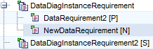
|
| 9. |
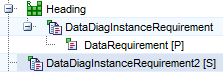
Insert DataDiagInstRq: A = grandparent of P |
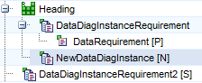
|
Note for #1: the magic line does “insert before” (Rule 2).
Note for #2: this is the motivation of Rule 2 = using “insert before”. With “insert after”, this insertion would not be possible without an extra menu item.